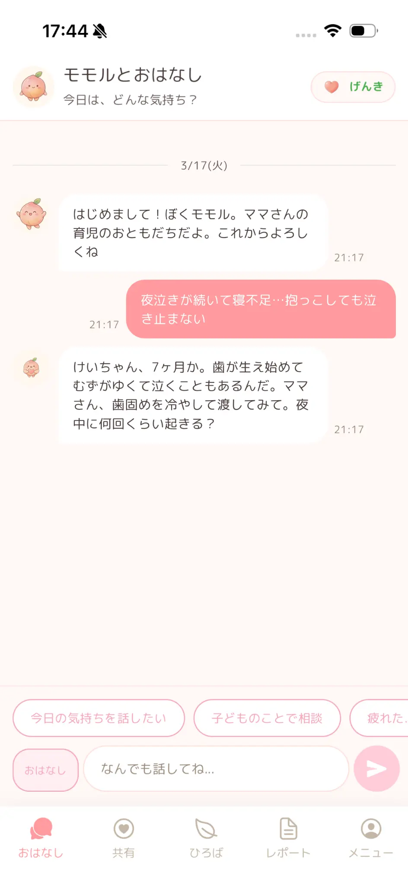
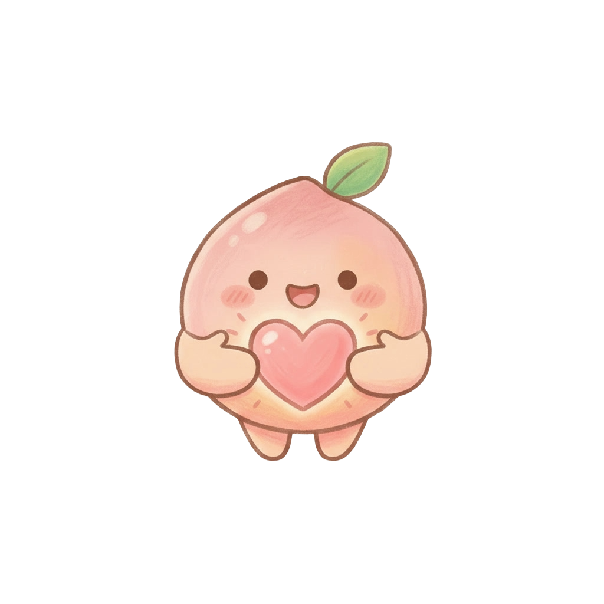

モモルって？
育児のしんどさ、ちょっとした不安、誰かに聞いてほしいこと。
モモルに話しかけるだけで、気持ちをやさしく受け止めて、
パパにもそっと届けてくれます。
育児の記録や振り返りも、ぜんぶモモルにおまかせ。
ひとりで抱えなくていい毎日が、ここからはじまります。
できること
「今日もしんどかった」「誰かに聞いてほしい」そんな気持ちを、モモルがやさしく受け止めます。話すだけで、すこし気持ちが軽くなります。
直接言いにくいことも、モモルがうまくまとめてパパに届けます。パパはスタンプで気持ちを返せます。
「離乳食いつから？」「夜泣きはいつまで？」
育児の疑問をモモルに聞けば、わかりやすく教えてくれます。
育児の記録を自動でまとめながら、1週間の振り返りもしてくれます。ママのがんばりや嬉しかったこと、パパへの感謝も、モモルがやさしく振り返ります。
はじめ方

LINEのボタンをタップして友だち追加。TestFlightのリンクが届きます。

TestFlightからモモルをインストール。iPhoneがあればすぐ使えます。


今日の気持ちをモモルに話しかけてみてください。ゆっくり聴いてくれます。
よくある質問
はい、テスト期間中はすべての機能を完全無料でご利用いただけます。テスト終了後に有料プランへの移行をご案内する予定ですが、強制ではありません。
妊娠中〜1歳前後のお子さんがいるママ・パパであればどなたでも参加できます。ママが先にインストールして、パパを招待する形が一般的です。
現在はiOS端末（iPhone）でご利用いただけます。TestFlightからインストールしていただきます。Android版は今後対応予定です。
会話データは端末内およびサーバー上に暗号化して保存されています。サーバー上のデータは暗号化されており、運営チームがモモルとの会話の中身を読むことはありません。詳しくはプライバシーポリシーをご確認ください。
はい。パパにもアプリをインストールしていただき、ママからの招待QRコードで連携していただきます。共有カードの確認やスタンプの送信はパパ専用の画面で行えます。